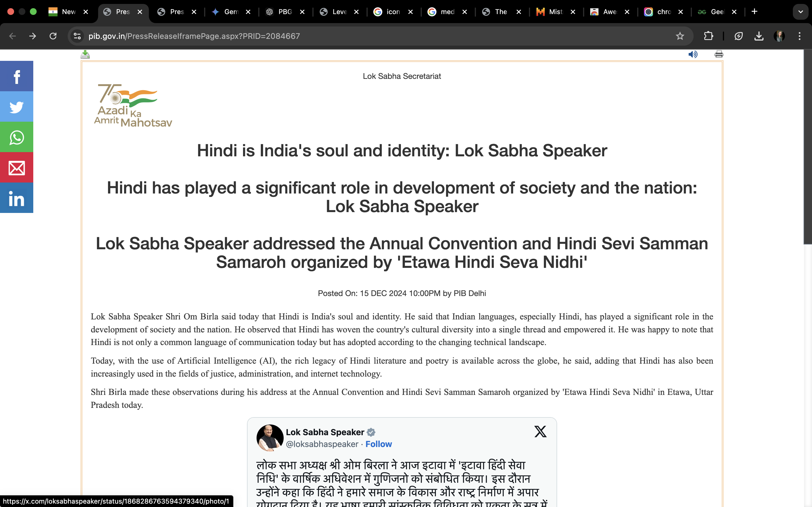
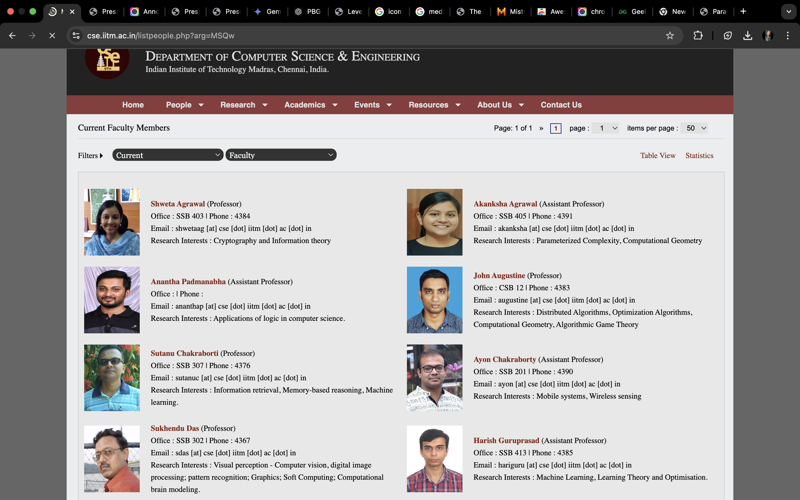

1. Indian Government Press Releases
Problems:
- Visual Design: The website looks outdated and cluttered. The color scheme is dull and uninspiring.
- Accessibility: The font size is too small, and the contrast is poor. There is no option to adjust these settings.
- User Experience: The search function is ineffective, and there’s no clear way to find specific information.
Inspiration:
The US Department of State website is a great example of clean design and accessibility. It uses a modern layout, clear hierarchy, and a powerful search function.

2. IITM CSE Faculty Website
Below is the annotated screenshot and an analysis of the problems on the page.

Problems Identified:
- Inconsistent Layout: Faculty images are not aligned properly, and spacing is uneven.
- Lack of Visual Hierarchy: Names, titles, and contact information are all the same size and color, making it hard to scan.
- No Search Functionality: There’s no way to search for specific faculty members quickly.
- Outdated Design: The overall look is dated and lacks modern UI/UX standards.
Suggestions for Improvement:
- Improve Alignment: Use a grid-based layout for consistent spacing and alignment.
- Enhance Visual Hierarchy: Use bold text for names, smaller fonts for titles, and subtle fonts for contact details.
- Add Search and Filter Options: Implement a search bar to help users find faculty members efficiently.
- Modernize the Design: Adopt a clean, responsive layout with modern fonts and colors.